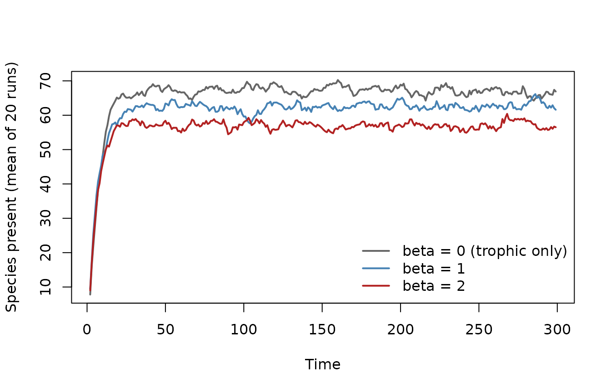
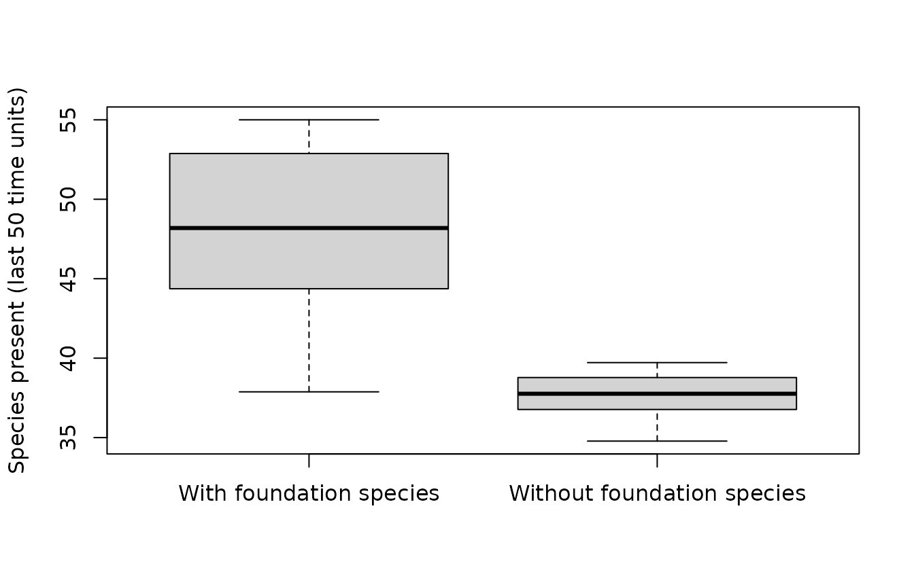

Assembly of multilayer networks: trophic and non-trophic interactions
Source:vignettes/multilayer-assembly.Rmd
multilayer-assembly.RmdmetaWebNetAssemblyCT() simulates the assembly of a local
food web from a meta-web: species arrive with rate m, go
extinct with rate e, and predators without prey go extinct with
rate se (secondary extinction). Only trophic links matter.
metaWebNetAssemblyML() extends it to multilayer networks:
the non-trophic layers change the extinction rates, so that
- losing a partner with a positive effect (a mutualist, a habitat provider) raises the extinction rate, and
- losing a partner with a negative effect (a competitor) lowers it.
The extinction rate of species i is
where
and
are the fractions of its positive and negative partners present at time
t.
and
are then the largest factors by which the partners can lower or raise
the extinction rate. Optionally, some species can depend
obligately on others (e.g. on foundation species): they
go extinct with rate se when none of the species they depend on
is present, as a predator without prey does. With
and no obligate dependence the model is
metaWebNetAssemblyCT().
The data: a multiplex network of the Chilean rocky intertidal
The multiweb package includes the network of Kéfi et
al. (2015), with 106 species of the central Chilean rocky shore and
three layers: trophic links, positive non-trophic links (mostly habitat
or refuge provision by sessile species) and negative non-trophic links
(mostly competition for space). multiweb::readMultiplex()
returns an mgraph, a list of igraph layers; the names we
give to the layers are their identifiers.
library(meweasmo)
suppressPackageStartupMessages(library(igraph))
fpath <- system.file("extdata", package = "multiweb")
dn <- list.files(fpath, pattern = "^Kefi2015.*\\.txt$")
dn # files in alphabetical order: negative, positive, trophic
#> [1] "Kefi2015_chilean_NTIneg.txt" "Kefi2015_chilean_NTIpos.txt"
#> [3] "Kefi2015_chilean_TI.txt"
mg <- multiweb::readMultiplex(dn, types = c("Negative", "Positive", "Trophic"), fpath, skipColumn = 2)
sapply(mg, ecount)
#> Negative Positive Trophic
#> 3089 172 1362The direction of the links
Before simulating we must know what a link a -> b
means in each layer, because datasets use different conventions. In
these matrices the row species receives the effect of the column
species, and readMultiplex() makes links from row to
column. In the trophic layer the links therefore go from prey to
predator, as meweasmo expects. Basal species have no
incoming links:
tr <- mg$Trophic
head(V(tr)$name[degree(tr, mode = "in") == 0])
#> [1] "adenocystis utricularis" "ahnfeltiopsis spp."
#> [3] "benthic_diatoms" "bryopsis_spp"
#> [5] "centroceras spp." "ceramium spp."In the positive layer the links go from the beneficiary to the species that provides the benefit: the habitat formers, the mussel Perumytilus purpuratus and the kelp Lessonia nigrescens, receive the most links.
head(sort(degree(mg$Positive, mode = "in"), decreasing = TRUE))
#> perumytilus purpuratus semimytilus algosus
#> 38 26
#> lessonia nigrescens gelidium spp.
#> 25 13
#> corallina offcinalis var. chilensis mazzaella laminarioides
#> 11 10So the species at the origin of a positive link receives a positive
effect and the species at the end none, (+, 0); in the negative layer
the origin receives a negative effect, (-, 0). Competition, recorded in
both directions, becomes (-, -). We write this in a layer table (see
default_layer_signs() for the format; its defaults follow a
different convention):
layers <- data.frame(layer = c("Trophic", "Positive", "Negative"),
sign_from = c(-1, 1, -1),
sign_to = c( 1, 0, 0),
rule = c("trophic", "modifier", "modifier"))If the links of a network carry the sign of the effect of
from on to as an edge attribute, use
effect_attr instead and the layer signs are not needed.
From layers to model matrices
build_multilayer_assembly() shows how the network is
translated: the trophic meta-web metaW, the matrix
M of effects on the log extinction rate, and the obligate
dependence matrix Dep.
b <- build_multilayer_assembly(mg, layers, beta = c(pos = 1, neg = 1))
length(b$species)
#> [1] 106
sum(b$metaW) # trophic links
#> [1] 1362
c(positive_effects = sum(b$M < 0), negative_effects = sum(b$M > 0))
#> positive_effects negative_effects
#> 137 3054M[i, j] is the effect of the presence of j on
the log extinction rate of i. With the default
normalize = TRUE, each row adds up to at most
for the positive partners and
for the negative ones. For example, the effects received by the limpet
Scurria variabilis are:
x <- b$M["scurria variabilis", ]
round(x[x != 0], 3)
#> fissurella crassa fissurella limbata gelidium spp.
#> -0.143 -0.143 -0.143
#> mazzaella laminarioides nothochthamalus scabrosus perumytilus purpuratus
#> -0.143 -0.143 -0.143
#> porphyra_spp
#> -0.143Simulations
We compare the trophic model
()
with increasing effects of the non-trophic partners. All species have
the same rates; metaWebNetAssemblyML() builds the matrices
and simulates.
set.seed(123)
tf <- 300
run <- function(beta, ...) metaWebNetAssemblyML(mg, layers, beta = c(pos = beta, neg = beta),
m = 0.1, e = 0.05, se = 0.5, time = tf, ...)
sims <- lapply(c(0, 1, 2), function(beta) replicate(20, colSums(run(beta)$STime[, 2:(tf - 1)])))
matplot(2:(tf - 1), sapply(sims, rowMeans), type = "l", lty = 1, lwd = 2, col = c("grey40", "steelblue", "firebrick"),
xlab = "Time", ylab = "Species present (mean of 20 runs)")
legend("bottomright", c("beta = 0 (trophic only)", "beta = 1", "beta = 2"), lty = 1, lwd = 2,
col = c("grey40", "steelblue", "firebrick"), bty = "n")
Whether the non-trophic layers increase or decrease the number of
species depends on the balance between positive and negative partners.
In this network negative links (competition for space) are far more
numerous than positive ones, so stronger effects of the partners lower
the number of species. With normalize = TRUE the total
effect on each species depends on the fraction of its partners
present, not on their number.
Obligate dependence on foundation species
The positive layer is dominated by habitat provision. Suppose the species that receive a positive effect from the two habitat formers cannot persist without at least one of them:
foundation <- c("perumytilus purpuratus", "lessonia nigrescens")
b <- build_multilayer_assembly(mg, layers, beta = c(pos = 1, neg = 1),
obligate_on = foundation, obligate_layers = "Positive")
sum(rowSums(b$Dep) > 0) # number of dependent species
#> [1] 53Half of the species depend on the habitat formers under this rule, a
strong assumption; obligate_layers and
obligate_on control how wide the dependence is.
To see their effect we remove the foundation species from the regional pool (migration rate 0) and compare with the full pool:
m <- ifelse(b$species %in% foundation, 0, 0.1)
S_with <- replicate(20, {
r <- metaWebNetAssemblyML(mg, layers, beta = c(pos = 1, neg = 1), m = 0.1, e = 0.05, se = 0.5, time = tf,
obligate_on = foundation, obligate_layers = "Positive")
mean(colSums(r$STime[, (tf - 50):(tf - 1)]))
})
S_without <- replicate(20, {
r <- metaWebNetAssemblyML(mg, layers, beta = c(pos = 1, neg = 1), m = m, e = 0.05, se = 0.5, time = tf,
obligate_on = foundation, obligate_layers = "Positive")
mean(colSums(r$STime[, (tf - 50):(tf - 1)]))
})
boxplot(list("With foundation species" = S_with, "Without foundation species" = S_without),
ylab = "Species present (last 50 time units)")
Practical notes
-
Check the direction of the links of every layer
before simulating; it is the most common source of silent errors.
build_multilayer_assembly()lets you inspect the result. -
Parameters.
betais hard to estimate from the structure of a single network. A sensible approach is to fit m, e and se (e.g. by ABC on the number of species and the connectance) for each value ofbetain a grid and treatbetaas a sensitivity parameter. -
Normalization. With
normalize = FALSEthe effects add up per partner, and a species with many positive partners can become practically immortal. -
Speed. For many simulations of the same network,
build the matrices once with
build_multilayer_assembly()and call the C++ coremetaWebNetAssemblyMLCT()directly.
References
Kéfi, S., Berlow, E. L., Wieters, E. A., Joppa, L. N., Wood, S. A., Brose, U., & Navarrete, S. A. (2015). Network structure beyond food webs: mapping non-trophic and trophic interactions on Chilean rocky shores. Ecology, 96(1), 291–303. https://doi.org/10.1890/13-1424.1